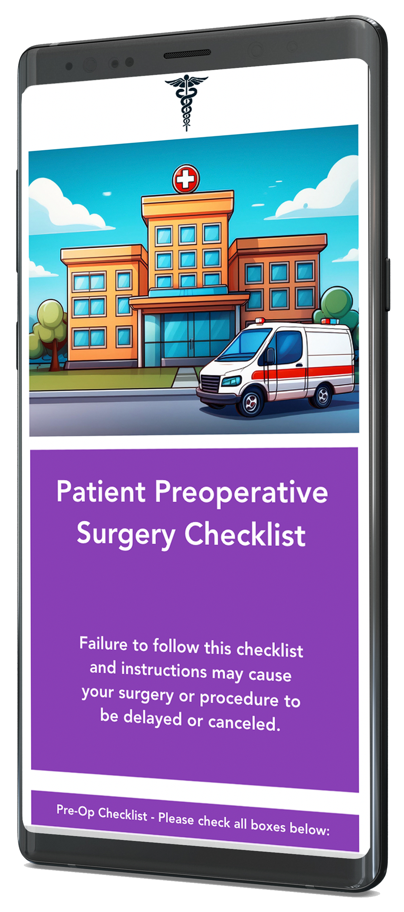
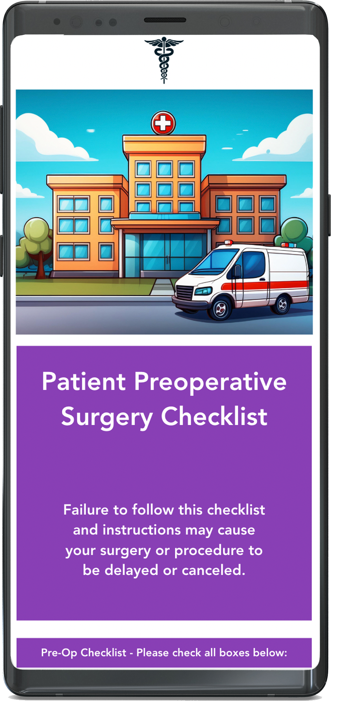

Medical App
Goal: Reduce the number of complications and cancelled surgeries on a weekly/monthly basis by
increasing patient safety and compliance.
Problem: "In the United States, patient preparation is frequently rushed, inconsistent, and largely office-based, leading to a patient experience that is less than ideal. Consequently, many hospitals experience high day-of-surgery cancellation rates, sometimes exceeding 5%. These cancellations not only frustrate patients and surgeons alike but can also result in long-term repercussions for the hospital's operational efficiency and reputation. The financial implications of each cancellation are substantial, with potential losses ranging from $2,000 to $10,000 per case."
(Source: https://www.surgicaldirections.com
/insights/whitepaper/2021/11/04/if-your-day-of-
surgery-cancellation-rate-is-greater-than-1-you-have-an-opportunity/)
A large number of thes cancellations can be linked to patient non-compliance such as not following pre-op
instructions, not fasting, not stopping medications, or even missing appointments. Patient non-compliance wastes OR time, staff time, and costs a lot of money.
Solution:
Empowering patients to take an active role in their healthcare decisions and follow through. The link to the app will be presented to patients via text and email with added instructions. Hard copy instructions are typically lost. This tool can help provide additional protection for healthcare staff against false patient claims of not having received the preoperative paperwork. Pre-operative education is enhanced through clearer instructions delivered directly by the physician, with information reviewed together and supported by modern tools that are easily accessible and less likely to be misplaced. They'll always have access to the app. If they are unable to locate it in their text or email, they can request to have it resent to them by their physician. The physician will also make the app available to their patient through QR scan. Overall, this tool will help reduce the number of surgery complications and cancellations, thus keeping the patient safe and substantially reducing hospital financial losses.
This simple, user-friendly checklist app was built using Vue.js, HTML, CSS, and JavaScript. Since the anesthesiologist I developed this for is currently using it, I'm unable to share the link on my site.

